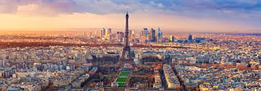

About Kwandengezi Beauty Pagent
Introduction
Kwandengezi Beaty pagent is not just a beauty pagent. It is a self-developement for the youth and encouraging it to value and take care of themselves inside and outside. They say looks don't matter but it is who you are on the inside that truely defines you.With that said we are teaching them to take care of their beauty ,bodies , attitude,personality,etc.
Gugu Cele is a female leader with boundless entertainment industry experience.She is passionate about grooming youth.She founded the programe Kwandengezi Beauty Pagent.The program is a platform for young youth to meet and network with the like-minded people. The program focuses on growth for participant in different life aspect.
It keeps the youth off the streets and encourages them to live and be happy without using drugs and alcohol.In our program activation,we emphasize the importance of an educated mind to compliment the beautiful face.
Objectives
Our aim is to celebrate talent in the entertainment sector through a multi-disciplinary program, a beauty page with live performances,dance, visual and craft exhibitors.We aim to engage with youth and talk about their issues around education,gender and health.Creating a platform for emerging live performers to entertainment our program audience,while sharing stage with some big names.
We ought to positively brand Kwandengezi Township as a tourist attraction.We also want to collabotrate with organisations from outside Kwandengezi for enhancing program visibility.We are aiming to improve the behaviour of our communities's youth and creat a networking platform for the youth in the art.
Prices To Be Won
- first place
-
- R10000
- A vacation in paris
- A brand new AMG

- second place
-
- R5000
- A vacation in Cape Town

- third place
-
- R5000
This pagent takes place yearly (the deatils about it)
Date:16 Decmber 2020
Venue:Kwandengezi Hall
Time:12:00-15:00
Apply online using this link www.Kwandengezi Beauty Pagent.com or take forms from the Kwandengezi Salon
"Beauty Pagent"
"Contact details"